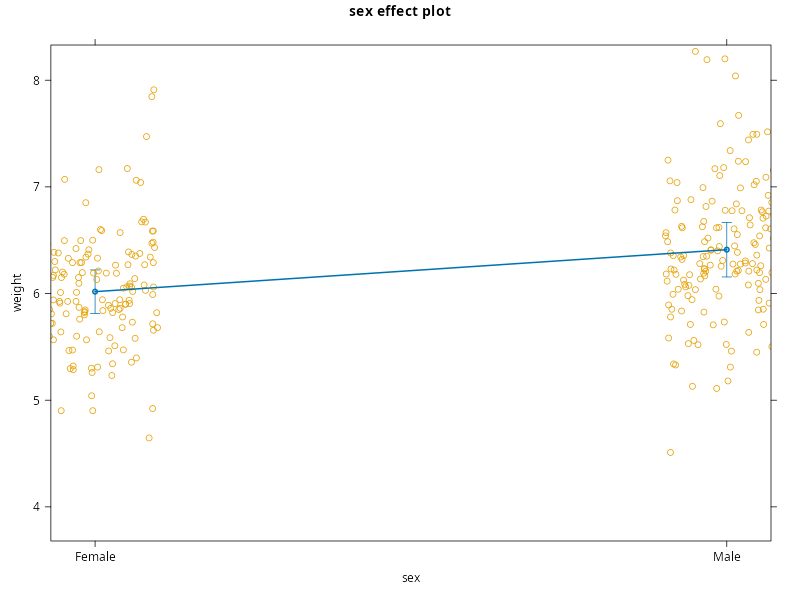
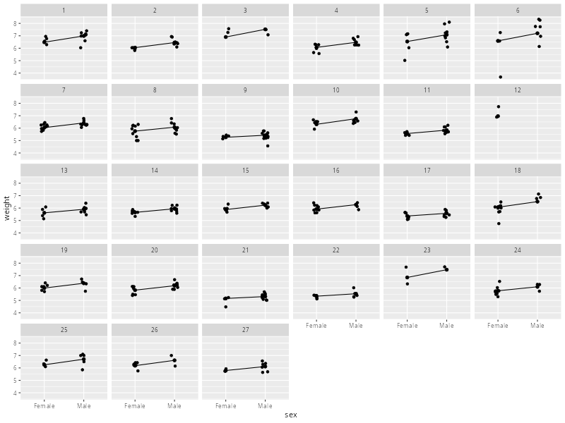
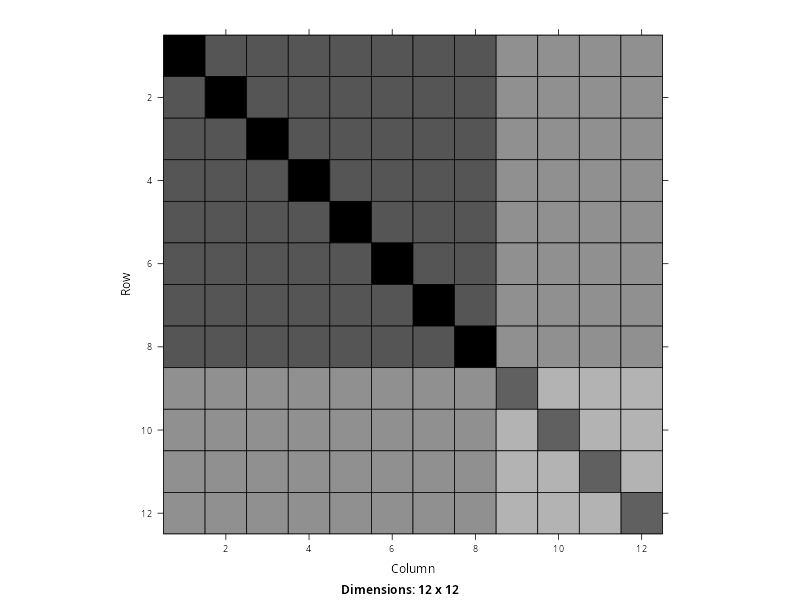
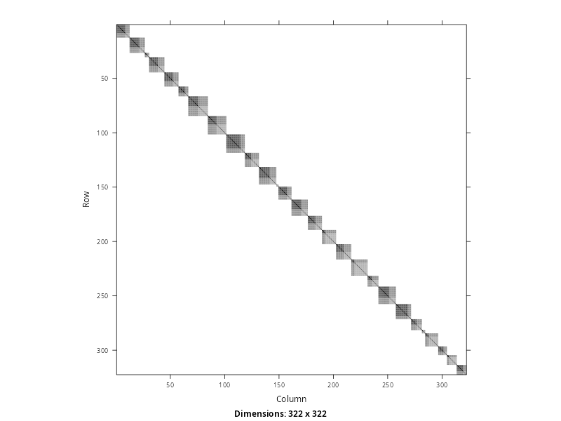
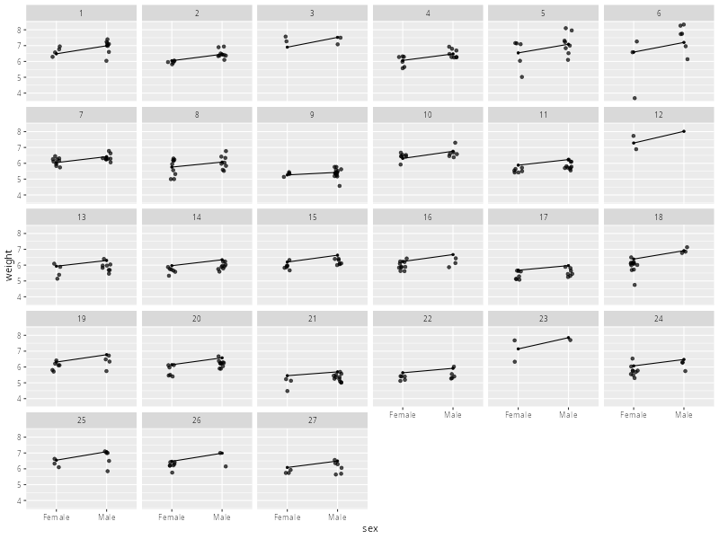
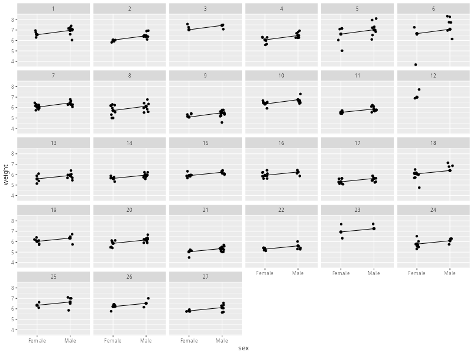

Implementing the Model in R#
As a final part of this lesson, we will see the process of fitting the model we have developed for the ratpup dataset using the lme() function in R. Despite the time spent building and considering this model, we will see that the specification and fitting process is deceptively quick. In a way, this belies the complexity and thought that sits behind the model. This is why the temptation is often to skip this process, especially when introducing these methods to students. However, skipping these steps can lead to confusion, conceptual misunderstandings and knowledge gaps. This is the reason why we have spent so long building to this point, rather than jumping straight to the R code.
Collapsing to Mixed-effects Form#
As we know, in order to fit a multilevel model using lme(), we need to collapse over the levels and specify the model in mixed-effects form. Our current two-level model is given below, where you can flip between the generic notation and the data labels using the tabs.
In order to turn this into a single-level mixed-effects models, we simply replace the terms at Level 1 with their equalities at Level 2. This is shown below
Finally, we collect like-terms together such that the fixed elements are together and the random elements are together. This is not strictly necessary, but makes the model easier to understand.
Specifying the Random-effects#
Given the mixed-effects form above, we need to think about how we express the random-effects to lme(). The fixed effects are easy, because this will just be weight ~ 1 + sex + treatment + sex:treatment. So, no different to what we have seen previously and effectively what we can see written above. However, the random-effects are currently written as
which need a moment’s thought in order to turn them into something lme() can use.
To begin with, no matter what we specify there will always be a final error term. This is the same as any regression model. We never tell lm() of gls() that we want errors because they are a fundamental component of the model. So, we do not need to worry about the final error term \(\eta^{(k)}_{ij}\)[1]. Because of this, all we really need to tell lme() about is
Now, notice that both of these terms relate to a specific litter \(k\), so another way of writing them would be conditional on the value of \(k\)
Now that we have moved \((k)\) out of the way, it starts to become clearer what these terms mean within a single litter. For a given litter \(k\), we have a constant value called \(\xi\) and an effect of sex \(j\) called \(\phi\). You can tell what these relate to by their indices. \(\xi\) has no indices and so must be the same value for every observation within litter \(k\). Similarly, \(\phi\) is indexed by \(j\), which corresponds to the variable sex. So its value is constant within a single sex but different between different sexes, within litter \(k\). So, if we were to write this as an R formula for a single litter it would be 1 + sex. To make this conditional on each litter, we use 1 + sex | litter, which can be read as an intercept and effect of sex per-litter. This is exactly the syntax we give to lme().
Implementation Using lme()#
Taking everything together, we can specify this model using lme(). In the code below, we choose to make the fixed-effects explicit by using the fixed= argument. We have also included the intercept explicitly in both formulas. Although neither are strictly necessary and can be omitted in future, the aim is just to make the function call as clear as possible.
library(nlme)
lme.ratpup <- lme(fixed = weight ~ 1 + treatment + sex + sex:treatment, # fixed-effects
random = ~ 1 + sex|litter, # random-effects
data = ratpup)
As usual, we can call summary() on the returned object to see the results of the model estimation, as well as the inferential tests on the coefficients.
summary(lme.ratpup)
Linear mixed-effects model fit by REML
Data: ratpup
AIC BIC logLik
438.799 476.3564 -209.3995
Random effects:
Formula: ~1 + sex | litter
Structure: General positive-definite, Log-Cholesky parametrization
StdDev Corr
(Intercept) 0.5019186 (Intr)
sexMale 0.1554335 0.888
Residual 0.4005464
Fixed effects: weight ~ 1 + treatment + sex + sex:treatment
Value Std.Error DF t-value p-value
(Intercept) 6.200295 0.1685193 292 36.79278 0.0000
treatmentHigh -0.293458 0.2647520 24 -1.10843 0.2787
treatmentLow -0.315255 0.2376438 24 -1.32658 0.1971
sexMale 0.441064 0.0878297 292 5.02181 0.0000
treatmentHigh:sexMale -0.083920 0.1529263 292 -0.54876 0.5836
treatmentLow:sexMale -0.077938 0.1272381 292 -0.61253 0.5407
Correlation:
(Intr) trtmnH trtmnL sexMal trtH:M
treatmentHigh -0.637
treatmentLow -0.709 0.451
sexMale 0.262 -0.167 -0.186
treatmentHigh:sexMale -0.151 0.200 0.107 -0.574
treatmentLow:sexMale -0.181 0.115 0.277 -0.690 0.396
Standardized Within-Group Residuals:
Min Q1 Med Q3 Max
-7.26679495 -0.48614771 -0.01516592 0.55664433 2.81749336
Number of Observations: 322
Number of Groups: 27
Fixed-effects Tests#
Much as we saw last week, the fixed-effects tests are provided in the table alongside \(t\)-values and \(p\)-values derived from a simple implementation of effective degrees of freedom. We can see how this has partitioned the effects into those that apply between litters (24 degrees of freedom) and those that apply within each litter (292 degrees of freedom). We can also follow this up with omnibus tests using Anova()
library('car')
Anova(lme.ratpup)
Analysis of Deviance Table (Type II tests)
Response: weight
Chisq Df Pr(>Chisq)
treatment 1.7224 2 0.4227
sex 48.4288 1 3.425e-12 ***
treatment:sex 0.4862 2 0.7842
---
Signif. codes: 0 ‘***’ 0.001 ‘**’ 0.01 ‘*’ 0.05 ‘.’ 0.1 ‘ ’ 1
where we can see that there is no significant interaction between sex and treatment, nor a main effect of treatment. The only aspect that is suggestive of an effect on weight is sex. Because this is a factor with two levels, we do not really need to follow it up. But for the sake of completeness, the test from emmeans is given below, alongside a plot.
library('emmeans')
library('effects')
emm <- emmeans(lme.ratpup, pairwise ~ sex, mode='asymptotic', submodel='type2')
print(emm$contrasts)
plot(effect('sex', lme.ratpup, residuals=TRUE), partial.residuals=list(smooth=FALSE))
NOTE: Results may be misleading due to involvement in interactions
contrast estimate SE df z.ratio p.value
Female - Male -0.393 0.0567 Inf -6.931 <.0001
Results are averaged over the levels of: treatment
Degrees-of-freedom method: fixed
NOTE: sex is not a high-order term in the model

Exploring the Random-effects#
Next, we have some description of the random effects that were fit using ~ 1 + sex|litter. We can see three variance estimates here, which is what we expect given our previous description of the model we are building. We can also see that lme() has automatically estimated a correlation between the intercept and the effect of sex. This is done by default as a very general modelling assuming, irrespective of the context of the data. This allows for a more flexible covariance structure, as we will see further below. In the current context, this captures the idea that the effect of sex may relate to the average weight of each litter. For example, it might be that heavier litters also tend to show a larger sex difference in weight. If so, the correlation will be positive. If heavier litters tend to show a smaller sex difference, the correlation will be negative. This assumption can be switched off if we do not want it, but generally-speaking it allows for more flexibility as we will explore further below.
random.effects(lme.ratpup)
(Intercept) sexMale
1 0.283091048 0.066250415
2 -0.153500107 -0.033344540
3 0.701543759 0.178278121
4 -0.135362756 -0.031915416
5 0.340037227 0.105202850
6 0.390393255 0.169711123
7 -0.158110148 -0.063206359
8 -0.440380383 -0.124903334
9 -0.935772451 -0.277784567
10 0.108060557 0.011711707
11 -0.319291431 -0.089044095
12 1.080803194 0.297293631
13 -0.268172395 -0.079082057
14 -0.234212253 -0.069014833
15 -0.004590989 -0.009742578
16 0.030052979 -0.004193467
17 -0.521318592 -0.150524666
18 0.183390270 0.088278074
19 0.110812589 0.022647114
20 -0.057473372 -0.006617124
21 -0.749232516 -0.202209691
22 -0.566187590 -0.160408742
23 0.942642618 0.266500217
24 -0.131482487 -0.035557072
25 0.345791183 0.093074636
26 0.273784479 0.073033835
27 -0.115315687 -0.034433183
Recall from earlier that litter 12 had no male pups. Despite this, there is still a random slope of sex for this litter. How is this possible? This is the process of pooling in action.
Visualising the Model#
library(nlme)
library(ggplot2)
dat <- ratpup
dat$fit_litter <- predict(lme.ratpup, level = 1)
ggplot(dat, aes(x = sex, y = weight)) +
geom_point(position = position_jitter(width = 0.08, height = 0)) +
stat_summary(aes(y = fit_litter, group = litter),
fun = mean, geom = "line") +
stat_summary(aes(y = fit_litter, group = litter),
fun = mean, geom = "point", size = 2) +
facet_wrap(~ litter)

`geom_line()`: Each group consists of only one observation.
ℹ Do you need to adjust the group aesthetic?
The Marginal Covariance Structure#
library('Matrix')
Sigma <- getVarCov(lme.ratpup, type="marginal", individual="1")$`1` # Litter 1
print(Sigma)
Matrix::image(as(Sigma,'Matrix'))
1 2 3 4 5 6 7 8 9 10 11 12
1 0.5751104 0.4146730 0.4146730 0.4146730 0.4146730 0.4146730 0.4146730 0.4146730 0.3212178 0.3212178 0.3212178 0.3212178
2 0.4146730 0.5751104 0.4146730 0.4146730 0.4146730 0.4146730 0.4146730 0.4146730 0.3212178 0.3212178 0.3212178 0.3212178
3 0.4146730 0.4146730 0.5751104 0.4146730 0.4146730 0.4146730 0.4146730 0.4146730 0.3212178 0.3212178 0.3212178 0.3212178
4 0.4146730 0.4146730 0.4146730 0.5751104 0.4146730 0.4146730 0.4146730 0.4146730 0.3212178 0.3212178 0.3212178 0.3212178
5 0.4146730 0.4146730 0.4146730 0.4146730 0.5751104 0.4146730 0.4146730 0.4146730 0.3212178 0.3212178 0.3212178 0.3212178
6 0.4146730 0.4146730 0.4146730 0.4146730 0.4146730 0.5751104 0.4146730 0.4146730 0.3212178 0.3212178 0.3212178 0.3212178
7 0.4146730 0.4146730 0.4146730 0.4146730 0.4146730 0.4146730 0.5751104 0.4146730 0.3212178 0.3212178 0.3212178 0.3212178
8 0.4146730 0.4146730 0.4146730 0.4146730 0.4146730 0.4146730 0.4146730 0.5751104 0.3212178 0.3212178 0.3212178 0.3212178
9 0.3212178 0.3212178 0.3212178 0.3212178 0.3212178 0.3212178 0.3212178 0.3212178 0.4123597 0.2519223 0.2519223 0.2519223
10 0.3212178 0.3212178 0.3212178 0.3212178 0.3212178 0.3212178 0.3212178 0.3212178 0.2519223 0.4123597 0.2519223 0.2519223
11 0.3212178 0.3212178 0.3212178 0.3212178 0.3212178 0.3212178 0.3212178 0.3212178 0.2519223 0.2519223 0.4123597 0.2519223
12 0.3212178 0.3212178 0.3212178 0.3212178 0.3212178 0.3212178 0.3212178 0.3212178 0.2519223 0.2519223 0.2519223 0.4123597

Sigma.Big <- fullVarCov(lme.ratpup)
image(Sigma.Big)

Here we can see how the size of each litter corresponds to the dimensions of its covariance block. For instance, litter 3 is very small whereas litter 7 is quite large. Within each covariance block, we can also see the patterns that correspond to the male pups, the female pups and the correlation between them. In addition, notice that the covariance structure is 0 between litters. This is why we considered litter to be the “boundary of dependency”. Everything within a litter is correlated, everything between litters is independent. In effect, litter is being treated the same way that subject would be treated under repeated measurements.
Should sex be Fixed or Random?#
lme.mod.0 <- lme(weight ~ treatment + sex + sex:treatment, random= ~ 1|litter, data=ratpup, method='ML', control=lmeControl(opt='optim'))
lme.mod.1 <- lme(weight ~ treatment + sex + sex:treatment, random= ~ 1 + sex|litter, data=ratpup, method='ML', control=lmeControl(opt='optim'))
anova(lme.mod.0,lme.mod.1)
Model df AIC BIC logLik Test L.Ratio p-value
lme.mod.0 1 8 425.9672 456.1636 -204.9836
lme.mod.1 2 10 425.2734 463.0189 -202.6367 1 vs 2 4.693801 0.0957
# all litters in the fitted model
litters <- unique(ratpup$litter)
# prediction grid: both sexes for every litter
newdat <- expand.grid(
litter = litters,
sex = levels(ratpup$sex)
)
# add any other predictors at chosen reference values
# for example, if treatment is in the model:
newdat$treatment <- levels(ratpup$treatment)[1]
# litter-specific predictions
newdat$fit <- predict(lme.ratpup, newdata = newdat, level = 1)
ggplot(ratpup, aes(x = sex, y = weight)) +
geom_point(position = position_jitter(width = 0.08, height = 0), alpha = 0.7) +
geom_line(data = newdat, aes(y = fit, group = litter)) +
geom_point(data = newdat, aes(y = fit), size = 1) +
facet_wrap(~ litter)

library(nlme)
library(ggplot2)
dat <- ratpup
dat$fit_litter <- predict(lme.mod.0, level = 1)
ggplot(dat, aes(x = sex, y = weight)) +
geom_point(position = position_jitter(width = 0.08, height = 0)) +
stat_summary(aes(y = fit_litter, group = litter),
fun = mean, geom = "line") +
stat_summary(aes(y = fit_litter, group = litter),
fun = mean, geom = "point", size = 2) +
facet_wrap(~ litter)

`geom_line()`: Each group consists of only one observation.
ℹ Do you need to adjust the group aesthetic?
So notice now that the slope for each litter is identical because we have not allowed it to vary. Instead, the effect of sex is now fixed. The only random element of each litter is the scaling. In other words, how high or low the slope can be.